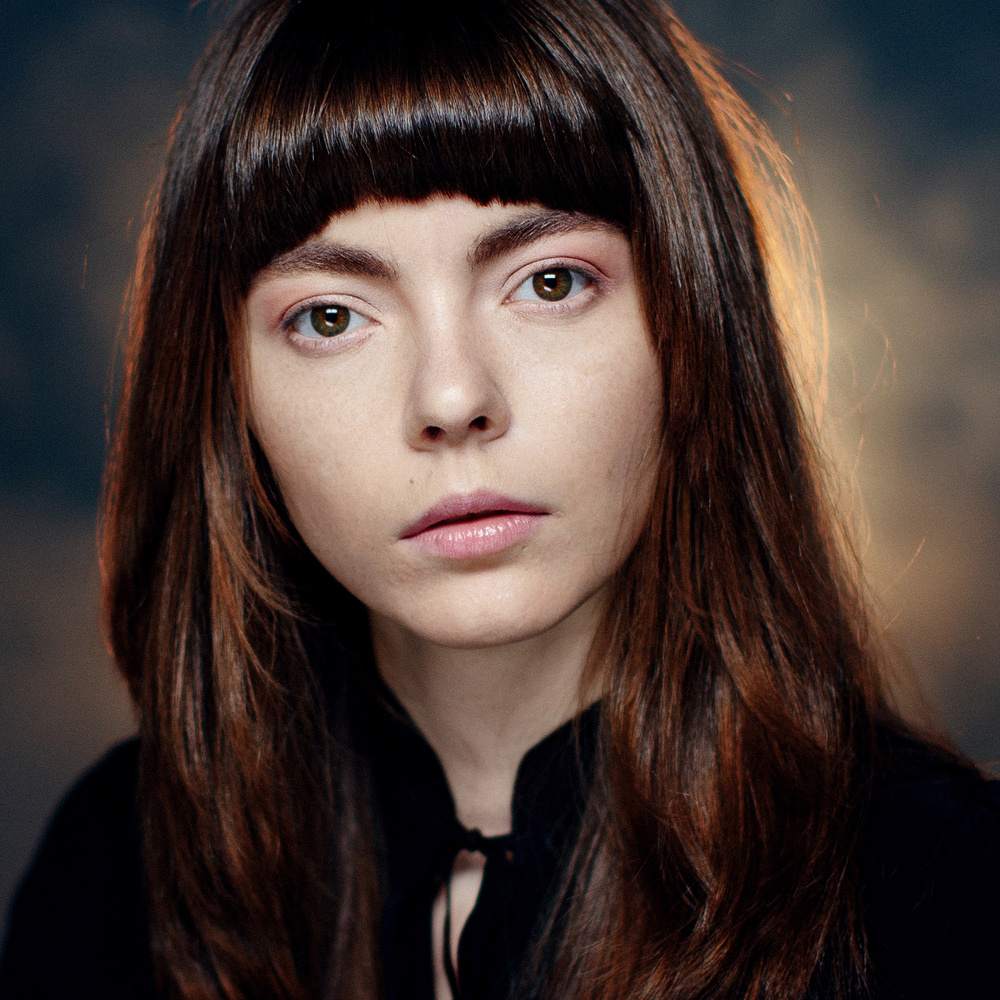
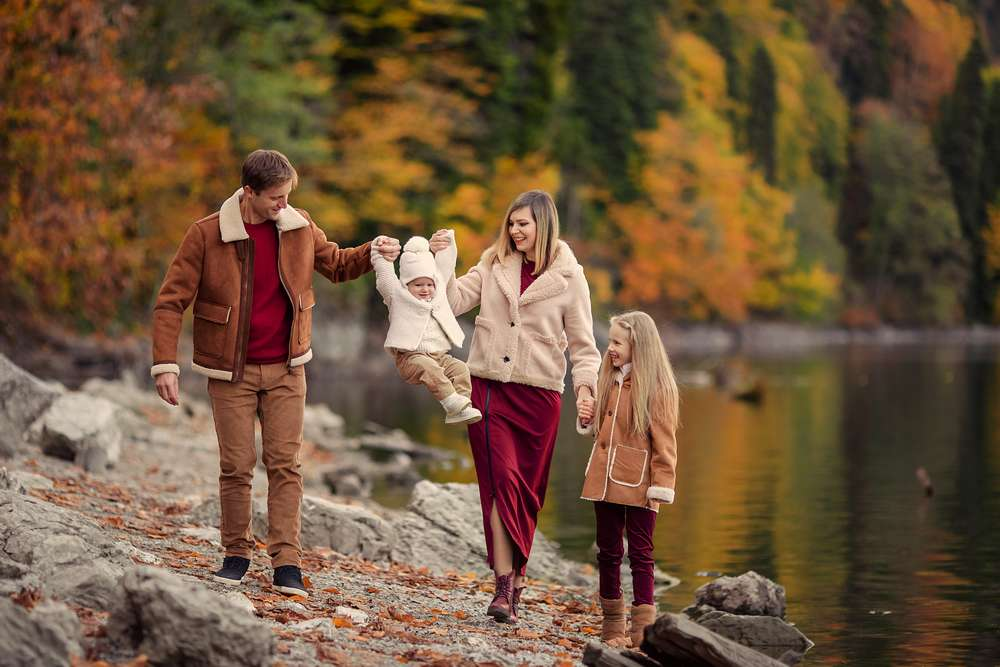
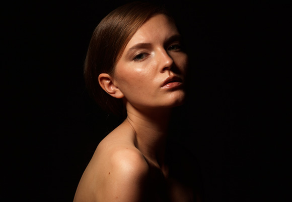
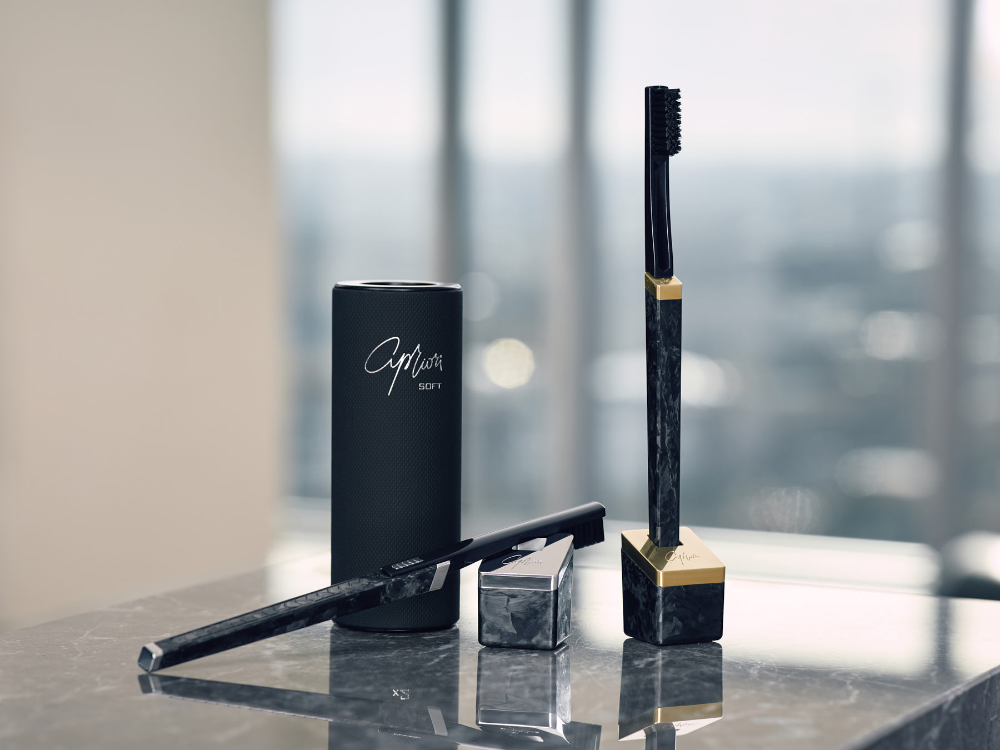
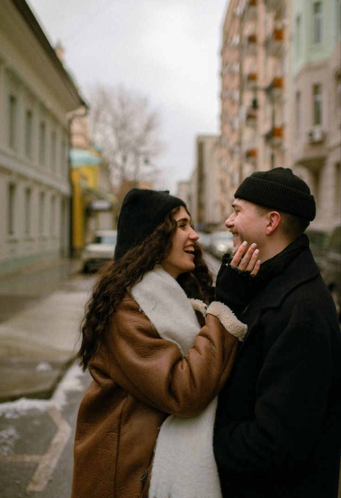
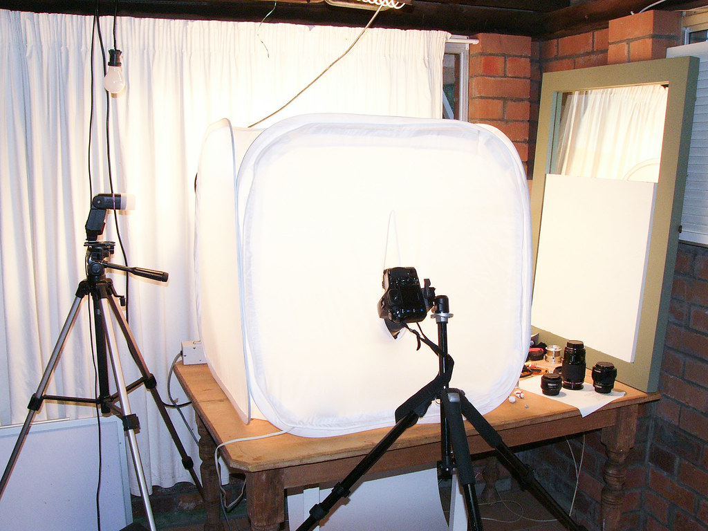

Чистый цвет и мягкая ретушь
Я не люблю тяжёлые фильтры, которые быстро устаревают. Предпочитаю спокойный цвет, аккуратную работу с кожей и тон, который сохраняет ощущение реального момента.
Здесь собраны съёмки в разных форматах: портреты, семейные прогулки, студийные серии и контент для брендов. Мне близки чистые композиции, мягкие цвета и живое состояние в кадре.






Я не люблю тяжёлые фильтры, которые быстро устаревают. Предпочитаю спокойный цвет, аккуратную работу с кожей и тон, который сохраняет ощущение реального момента.
Для меня важно, чтобы фотографии работали и по отдельности, и как цельная история. Поэтому я уделяю внимание не только красивым одиночным кадрам, но и общему ритму всей съёмки.